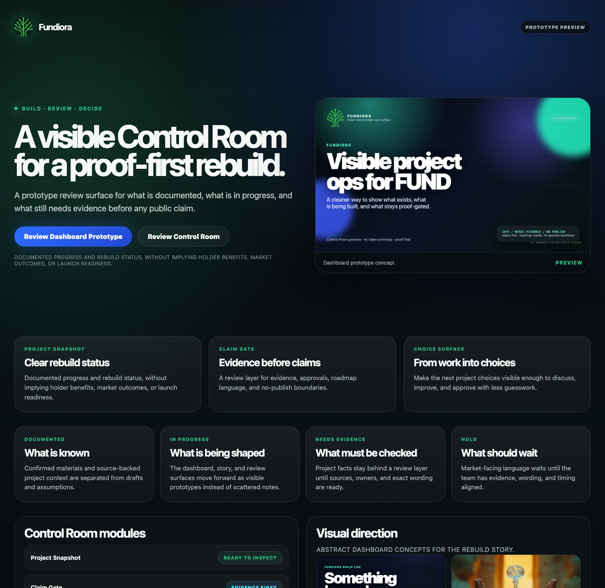

Utility 01
Team clarity room
A single surface that compresses current status, open choices, and next work instead of forcing everyone to read scattered chats and local files.
Fundiora is being shaped as a reviewable project operating surface: what is documented, what is being built, what needs evidence, and what the team should decide next — without implying market outcomes, holder benefits, launch readiness, or partner support.

A single surface that compresses current status, open choices, and next work instead of forcing everyone to read scattered chats and local files.
Every external-facing statement can be routed through source, owner, and approval checks before it becomes public wording.
GitHub branches, commits, PRs, and demo pages make progress visible without exposing secrets or over-claiming product readiness.
Confirmed project materials, historical direction, and active drafts are separated from assumptions.
Control room, utility map, visual direction, and review packets are built as inspectable artifacts.
Claims about token utility, rewards, partners, listings, and onchain behavior stay blocked until verified.
Tonight’s target is a sharper answer: what Fundiora is, who it helps, and which v0 demo should be shared next.
No guaranteed rewards, yield, staking, listing, partner endorsement, token price outcome, financial return, operational launch status, or wallet/action capability is claimed here. Those topics remain behind explicit evidence and approval gates.
Start with the static page, then check the utility draft, then the safety/checklist notes, and finally the PR timeline. The packet is intentionally no-JS and staging-only so wording and structure can be reviewed without implying public release.
Keep or replace the proof-first project control room definition.
Choose which safe lead frame reads strongest tonight: team clarity, evidence gate, build trail, or holder/community information surface.
Decide whether this branch should stay a static packet, tighten into a narrower mini-site, or pause at draft review.
Keep PR #1 draft-only, capture any approved wording, and make the next pass on this same branch before any merge or public link decision.
aurel/fundiora-github-showcase-2026-06-01 contains this public-safe demo packet.
Small, reviewable commits: demo shell, utility map, safety boundaries, scan workflow.
Draft PR is the checkpoint before any merge or Pages/public share-link activation.
By 20:00–21:00, this branch should support a clear conversation: “Fundiora is a proof-first project control room and utility surface. It can become a public-facing trust/ops layer only after exact claims, evidence, and access rules are decided.”